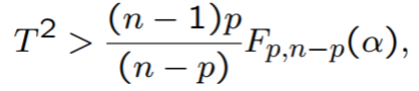

Consider the problem of determining a given \(p \times 1\) vector \(\mu_0\) for a mean of a multivariate normal distribution \(\mu = (\mu_1, \dots, \mu_p)'\).
We could test \(p\) disjoint hypothesis (one for each \(\mu_j\) in \(\mu\)) but that would not take advantage of the correlations between the variables \(X_1, \dots, X_p\).
How do we deal with multivariate inference ?
Multivariate Inference
Define a reasonable distance measure. An estimated mean vector that is too “far away” from the hypothesized mean vector \(\mu_0\) gives evidence against the null hypothesis.
A natural generalization of this squared distance is its multivariate analog
where
Which is called the Hotelling’s \(T^2\) statistic.
Hotelling’s \(T^2\)
If the observed \(T^2\) value is ‘small’ we fail to reject \(H_0: \mathbf{\mu} = \mathbf{\mu_0}\).
If the observed \(T^2\) value is ‘large’ we then reject \(H_0: \mathbf{\mu} = \mathbf{\mu_0}\).
To decide how large is large, we need the sampling distribution of \(T^2\) when the hypothesized mean vector is correct:
Hotelling’s \(T^2\)
We reject \(H_0\) for the \(p\)-dimensional vector \(\mathbb{\mu}\) at level \(\alpha\) when

where \(F_{p,n-p}(\alpha)\) is the upper \(\alpha\) percentile of the central \(F\) distribution with \(p\) and \(n-p\) degrees of freedom.
Hotelling’s \(T^2\) test in R: Example
Let’s consider the female sweat data to illustrate Hotelling’s \(T^2\) test in R.
Perspiration from a sample of 20 healthy females was analyzed. Three variables were measured for each women: \(X_1\) - sweat rate , \(X_2\) - sodium content, \(X_3\) - potassium content
The question is whether \(\mathbb{\mu_0} = [4, 50, 10]'\) is plausible for the population mean vector.
Hotelling’s \(T^2\) test in R: Example
data =read.table("D:/Teaching/UOP/Data Science/Courses_teaching/DSC_3101/Lectures/Lecture7/sweat.txt")#specify column names of the datacolnames(data) =c("subject", "x1", "x2", "x3")head(data)
library(ICSNP) #you may need to install this packagenullmean =c(4,50,10)HotellingsT2(X = data[, -1], mu = nullmean)
Hotelling's one sample T2-test
data: data[, -1]
T.2 = 2.9045, df1 = 3, df2 = 17, p-value = 0.06493
alternative hypothesis: true location is not equal to c(4,50,10)
Assumptions
Multivariate Normality
The Hotelling \(T^2\) test holds true only when the data is normally distributed with some mean and variance.
We can perform the multivariate Shapiro-Wilks test to test for normality of the data.
Checking Assumptions in R
We first need to check whether the data comes from a tri-variate Normal distribution or not. Let’s use R to perform the multivariate Shapiro-Wilks test.
library(mvnormtest)#you may need to install this packagemshapiro.test(t(data[,-1]))
Shapiro-Wilk normality test
data: Z
W = 0.93829, p-value = 0.2225
As the p-value for the test is 0.2225, we may claim that the data supports normality at \(5\%\) level of significance.
Two-sample Hotelling’s \(T^2\) test in R: Example
A pharmaceutical company had a drug which they want to test for effectiveness in reducing some topical diseases symptoms. A random sample of 20 people with the disease was given the drug. Based on this data and the data for the control group of size 18, we wish determine whether there is a significant difference between the drug and placebo in reducing the symptoms.
The data is as follows:
Two-sample Hotelling’s \(T^2\) test in R: Example
Two-sample Hotelling’s \(T^2\) test in R: Example
So here we assume
\(X\)=(Fever, Pressure, Aches) corresponding to the Drug group with mean \(\mathbb{\mu_1}\)
\(Y\)=(Fever, Pressure, Aches) corresponding to the Placebo group with mean \(\mathbb{\mu_2}\).
We want to test the hypotheses,
\(H_0: \mathbb{\mu_1}= \mathbb{\mu_2}\) vs
\(H_1: \mathbb{\mu_1} \ne \mathbb{\mu_2}\)
Two-sample Hotelling’s \(T^2\) test in R: Example
First we need to check for the normality of the data and we can perform the multivariate Shapiro-Wilks test for normality.
mshapiro.test(t(X))
Shapiro-Wilk normality test
data: Z
W = 0.90157, p-value = 0.04414
mshapiro.test(t(Y))
Shapiro-Wilk normality test
data: Z
W = 0.94289, p-value = 0.3245
Two-sample Hotelling’s \(T^2\) test in R: Example
Thus we see that \(Y\) supports normality. However, while testing for normality of \(X\), the p-value of the test turns out to be 0.04414 < 0.05 whereby rejecting the claim that the data is normally distributed.
It may be however assumed with certain relaxation that \(X\) is also normally distributed, since the p-value of the test is not much less than the significance level 0.05.
So now we perform the two sample Hotelling \(T^2\) test using R.
Two-sample Hotelling’s \(T^2\) test in R: Example
The R command is the same HotellingsT2() under ICSNP package. The only difference is that here along with the first sample we also provide the second sample.
HotellingsT2(X,Y)
Hotelling's two sample T2-test
data: X and Y
T.2 = 14.115, df1 = 3, df2 = 34, p-value = 3.857e-06
alternative hypothesis: true location difference is not equal to c(0,0,0)
Since p-value \(< 0.05\), \(H_0\) is rejected at \(5\%\) level of significance.
Multivariate Analysis of Variance (MANOVA)
Multivariate Analysis of Variance (MANOVA)
MANOVA is a generalization of Hotelling \(T^2\) test.
When we have more than 2 multivariate normal populations and we are interested in testing for the equality of the population means we perform MANOVA or Multivariate Analysis of Variance.
MANOVA in R
The R code for performing MANOVA test is given by manova().
There are several MANOVA test criterion like “Pillai’s trace”, “Wilks \(\Lambda\)”, “Roy’s Union-Intersection” etc. These can be specified by the test argument within the R function summary() when the summary is taken over the output from manova().
MANOVA in R: Example
Consider the skulls dataset from the R library HSAUR, which gives the measurement of various dimensions of skulls of Egyptians over the years
So our next natural question is: Which variables are significantly different over the years?
Such a question may be answered if we test for the equality of the means over the years corresponding to the marginal variables Y1=mb, Y2=bh, Y3=bl and Y4=nh.
In R this test for equality of marginal means over the years may be performed very simply with the help of the command summary.aov() and the argument for this function is the manova() output.
Multiple Comparisons in R
summary.aov(manova1)
Response 1 :
Df Sum Sq Mean Sq F value Pr(>F)
as.factor(skulls$epoch) 4 502.83 125.707 5.9546 0.0001826 ***
Residuals 145 3061.07 21.111
---
Signif. codes: 0 '***' 0.001 '**' 0.01 '*' 0.05 '.' 0.1 ' ' 1
Response 2 :
Df Sum Sq Mean Sq F value Pr(>F)
as.factor(skulls$epoch) 4 229.9 57.477 2.4474 0.04897 *
Residuals 145 3405.3 23.485
---
Signif. codes: 0 '***' 0.001 '**' 0.01 '*' 0.05 '.' 0.1 ' ' 1
Response 3 :
Df Sum Sq Mean Sq F value Pr(>F)
as.factor(skulls$epoch) 4 803.3 200.823 8.3057 4.636e-06 ***
Residuals 145 3506.0 24.179
---
Signif. codes: 0 '***' 0.001 '**' 0.01 '*' 0.05 '.' 0.1 ' ' 1
Response 4 :
Df Sum Sq Mean Sq F value Pr(>F)
as.factor(skulls$epoch) 4 61.2 15.300 1.507 0.2032
Residuals 145 1472.1 10.153
Multiple Comparisons in R
Thus we see that the variable Y2=bh is Marginally Significant over the years as the p-value for the equality of the means over time for variable Y2=bh is 0.04897 is marginally smaller than 0.05.
And the variable Y4=nh is Not Significant over the years as the p-value for the equality of the means over time for variable Y4=nh is 0.2032.
The other two variables however, are significant over the years as can be understood from the small p-values.